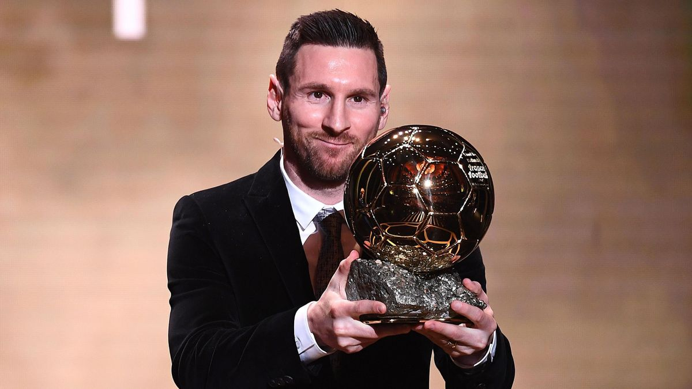
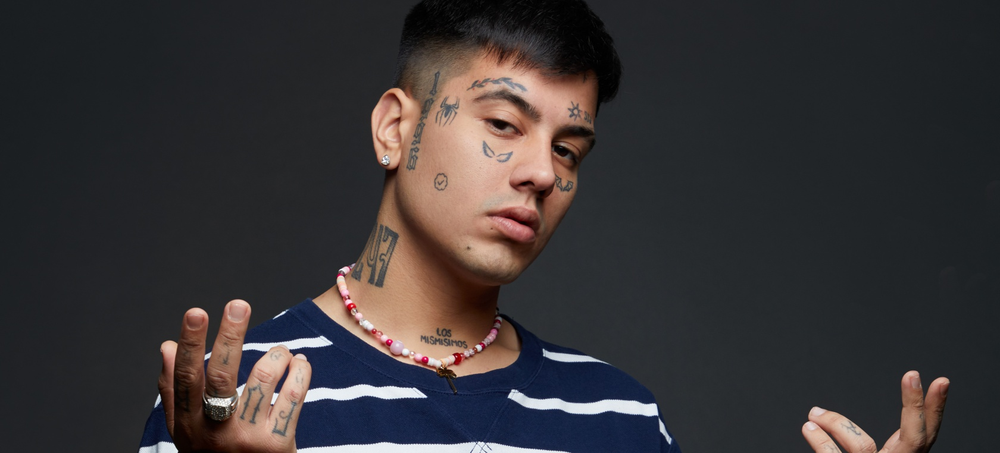

Video en vivo
Video en vivo foto/video
foto/video sentimiento/actividad
sentimiento/actividadTras un año 2020 sin ganador por la pandemia del coronavirus, el rosarino ha sumado un trofeo más a sus vitrinas tras los logrados en 2009, 2010, 2011, 2012, 2015 y 2019, y lo ha hecho en un 2021 que ha sido de lo más extraño para él. La temporada 2020-21 comenzó con su posible marcha, aunque acabó quedándose a las órdenes de Koeman y viendo cómo regresaba Joan Laporta tras la marcha de Bartomeu. Sin embargo, y cuando todo apuntaba a una renovación en el club azulgrana, tuvo que hacer las maletas rumbo a París debido a los problemas financieros de la entidad para inscribirle.

los 40 principales
enero 15 2022DUKI encabeza la lista como uno de los 10 artistas argentinos más escuchados en el mundo. Su hit “Goteo”, se mantuvo 24 semanas en el puesto número 1 de Argentina y lideró los rankings de Latinoamérica acumulando más de 114 millones de views.
